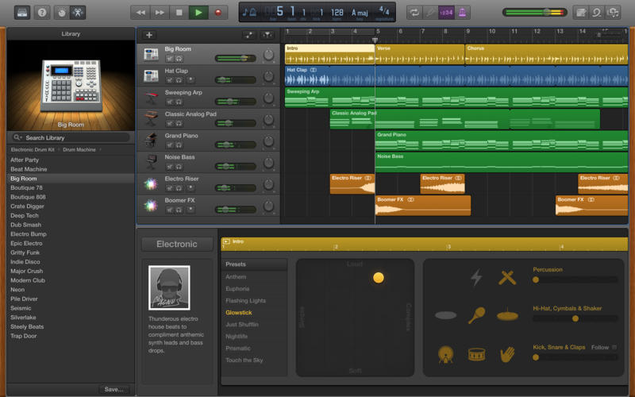
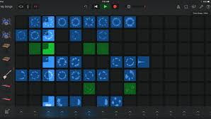
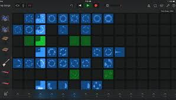

 

Music is journey that everyone must travel to. I believe that music is the key to understand people. Music is mor than sound its an extension of ones feelings and thoughts.By listening to other people's music we can become closer on a personal level.That is why we create music. Also we work on various musical projects on different apps such as FL studios and GarageBand.